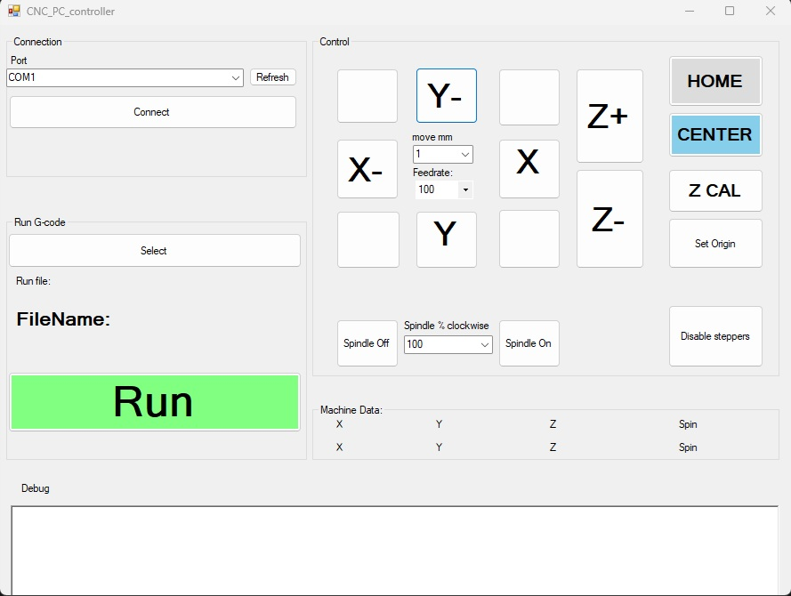

Bachelors thesis:
CNC engraver based on arduino
For my thesis i suggested my idea to build an cnc with arduino. I was quite confident due to prior use of arduino as well as seeing the Gcode (which at the time i thought its just linear movements). Only problem i saw on my way was how to control mutliple stepper motors simutaniosly ,but i did had idea for solution. Aditonally the backup solution was to use library.
How code works ?
There are two software parts working together, first is PC win froms deskop app and scnd is the arduino code controling machine.
Arduino CNC PC Controler
As you open the deskop app you must select the port and baud rate then hit connect. This will attempt to establish connection to arduino using .net framework, after connection is established it will send command $Connect to which arduino responds $Connected marking succesful communication (there is timeout if it doesnt succeed). The UI has many useful controls for contrling machine such as XYZ movement and aditional routines like HOME, CENTER, Z CAL . The user is expected to lead machine to desired starting point usually center and use ZCAL to set machine 0,0,0 datum , ZCAL uses the Z probe so you must put it under the tooltip plus attach the crocodile clips to the tooltip.
After ZCAL is finished machine moves up and you can disconnect used tools . There is run Gcode option for which you must select file. When user runs this option, the app will start sending gcode line by line to arudino , after line is finished executing ,machine requests next line with $NEXT . All operations are done behind Task.Run / Async Await in C# to keep UI responsive. In later versions of software the gcode is sent coupled with <> symbols so if stream stops machine can stop too .
Arduino CNC software
The whole software is consisting of few segments.
- Communication part
- Gcode reader
- Linear movement execution
- Circular movement execution
- Sensor checks and feedback
Communication part uses SerialPrint and SerialRead to communicate with PC
Gcode reader line by cutting into segments like G1 X100 then further into the letter and number, depending on the both it sets many variables such as movement type as well variable values . When end of line is reached execution begins
Linear movement (G1/G0) takes all parameters, and starts calulating. Since the step/mm is known it calulates the steps per mm (or inch depending on unit command) ,then uses step ratios and feedrate to get speeds for each motor. After all is calulated parameters are set to the Acell stepper library and form there the loop that runs until steps=0 is called.
Circular movement (G2/G3) uses X Y J K values. X,Y being the target while J and K offsets to the circle center from current position. The program calulates the points along circle in either clockwise or c clockwise direction using circle formula. X is incremeneted once while the Y keeps being incremented until radius is reached. To determine increment direction it sents current circle position plus center location to an function which based on quadrant or axis returns boolean. There is one final check if distance from target is smaller or equal to treshold so it finishes the circle by moving to target point. All resulting points are sent to the linear movement execution . Quite ineficient but, during that time i wasnt aware of matrix vector rotation, plus debugging trigonometry would have been difficult
During all proceses machine keeps track of the endstops and stop button while also being able to send feedback. The spindle motor is programmed to slowly ramp up/down with PWM to reduce starting current.
Mehanics
The frame is made out of wood ,for linear rails it uses drawer rails , while the for motion systems it uses T8 rods. Overall economical design since linear rails are expensive as well as aluminum extrusions. For attaching material the inserted nuts are used. Only downsides i noticed are the T8 rods having backlash plus Z axis has spots where it stops then moves most likely aligment issue
Electronics
Electornics consists of Arudino uno + CNC shield, 3x NEMA 17 HS4401 motors, 3x A4988 drivers , 24V DC 20 000 RPM motor , 12V 5A PSU, 6x endstop, 400W Boost converter , motor driver , stop button and CNC touch probe. Unsolved issue with power is that when arduino drives PWM. If PWM is less than 100% wires leading to motor heat up significantly ,as well as voltage on converter dropping below 24V , most likely cause is the timing gap in PWM making motor pull lot of current out of supply.

History
Initally project was planned to use Arduino MEGA + Ramps 1.4 hence the 12V PSU. Goal with ramps was to allow SD card use to avoid need for USB communication. During project i already developed the LCD + encoder UI for SD card. When it came to full hardware tests the AMS1117 blew up which forced me to move onto arduino uno,at the time i wasnt aware you musnt have PSU plugged along with USB which was most likely the cause of regulator failure. As time progressed the USB comm turned out to not be that difficult to implement. And by the time i was testing the uno ,the replacement mega came and i tried once more thinking it was wiring issue. It resulted in same failure so development and bug fixes continued on UNO. I defitnetly overesitmated complexity of this project, the Gcode turned out to be more complex than i thought, while i did figure it out, machine doesnt fully support it. The linear motion also became apparent its not as simple ,initally i did attempt on my own to time out the motors but using high level abstractions for this doesnt work so in end i was forced to go for accel stepper library. During dev of linear movements i explored Bresenham's line algorithm though i didnt implement it in end.
Machine itended use was to be used in PCB milling for projects.
Current state
While machine still remains unused, there are plans to upgrade software with more efficient circle algorithm, as well as next gcommand detection .The pc controler could even have visual feedback and predicted paths debugging. Also plan is that after software upgrades to return back to arduino mega so it wouldnt require PC to operate . Another hardware upgrades could include new T8 rod for Z axis and anti backlash nuts . Aditonally switch to the 24V PSU would probably solve issue with overheating wires while buck converter would power ramps and steppers. To allow USB communication there is idea to pull voltage of PSU diode on ramps to drive mosfet , so if PSU is plugged Vcc on USB gets blocked. In meantime i managed to repair both arduino megas damaged in project.